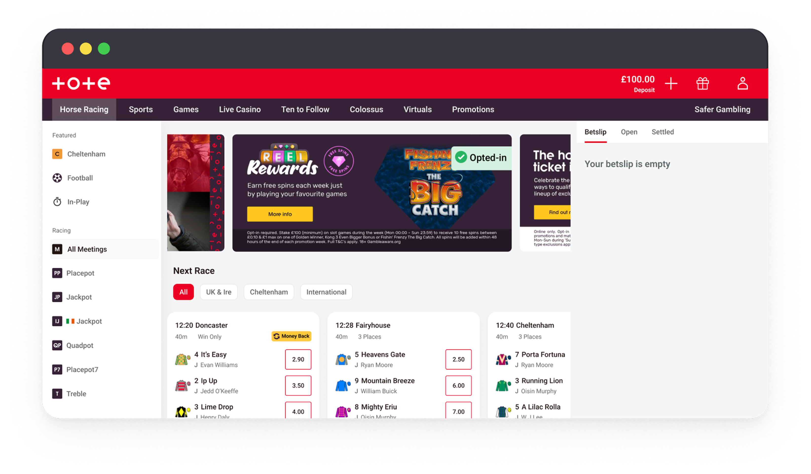
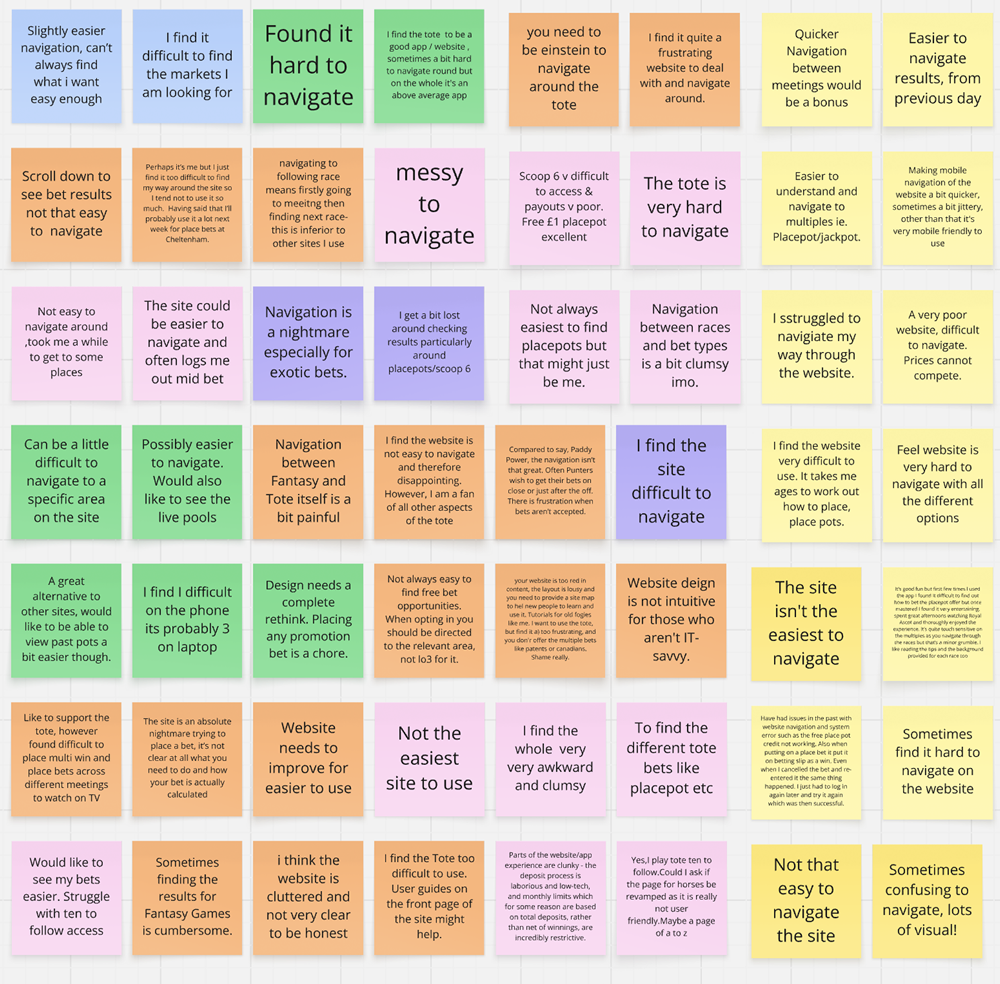
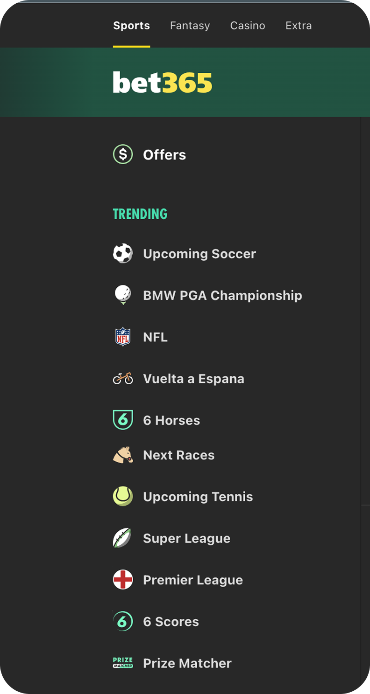
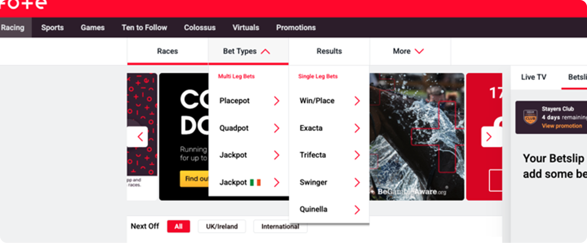
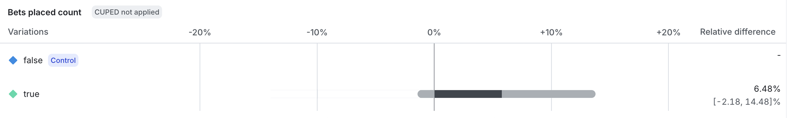

Navigation
Introduced a left panel navigation to improve navigation, as the previous drop down was landing customers on races that they did not intend to bet on. The panel enabled signposting 'featured' pages, which has 1.5M events in 6 months.
- Identified the problem through surveys and using clips from other initiative's interviews.
- Collaborated with BI to build dashboards displaying conversion and number of clicks to achieve goals.
- Conducted competitor analysis, also used NN to understand best practices.
- Conducted A/B tests to validate design.
The Problem
Customers were not in control of where they were navigating to when they clicked on a 'single leg' bet.
- Customer would click on the bet type drop down.
- Customer then clicks on win/place.
- Customer lands on the next chronological race.
- Customer then clicks meeting drop down.
- Customer then clicks on the race they wanted to navigate to.
Goals & Success Metrics
Research & Discovery


- Quarterly surveys identified that navigation was a key problem for customers.
- Competitor research showed that left hand panels were common place within the industry and used to highlight popular / featured events.
User Journey
Before

Redesign
Key design decisions
- Removing the win/place bet type – competitor analysis showed that to navigate to place a win bet, punters must go through the racecards. Therefore, customers will expect the same behaviour when using the Tote, meaning they can be in control of what race they navigate to.
- Featured – Collaborated with the Ops team about what to populate in the featured area. We agreed on football and in-play being a constant whilst creating the requirement that they can add any sport or event they feel appropriate.
- Mobile View – Building a burger menu with the left hand panel's content. As there is less signposting if a customer wanted to navigate via a bet type, we agreed to an A/B test to measure if the tabs were still effective for mobile.
AB Testing

Using LaunchDarkly and working with BI, we created an A/B test by using a cohort of active win bettors against a control of the existing journey.
We used the Tote Bet Club research cohort to test the new layout, they showed an increase in win bet conversion with no impact to the number of bets.
6.48%
Increase in bet conversion
Results & Impact
The left panel navigation has enabled us to create content managed components, where our operations team can select popular sports and events to be signposted for customers. This has had an added benefit of increasing the amount of traffic for customers. Furthermore, for win bets customers are navigating by selecting their desired time on the meeting component, meaning the win racecard is now one click away.
1.6M
Events in 6 months
8%
Increase in win conversion
7.3%
Increase in football impressions
Reflections and Learnings
Technology Limitations
With the sportsbook being a 3rd party integration, the options for combining the Tote homepage and the sports page are limited.
What I did:
- Persuaded stakeholders that making it easier for customers to navigate to our sportsbook, as by signposting the entry points to the sportsbook would boost conversion at a low cost would be a compelling business case.
What I learned:
- Working closely with the developers to understand the limitations and opportunities with not just the Tote, but also third party priorities.
Next Steps
The changes were isolated to the website, as the app did not have the resource to improve the navigation. Therefore, the next step is to replicate this navigation on the apps.